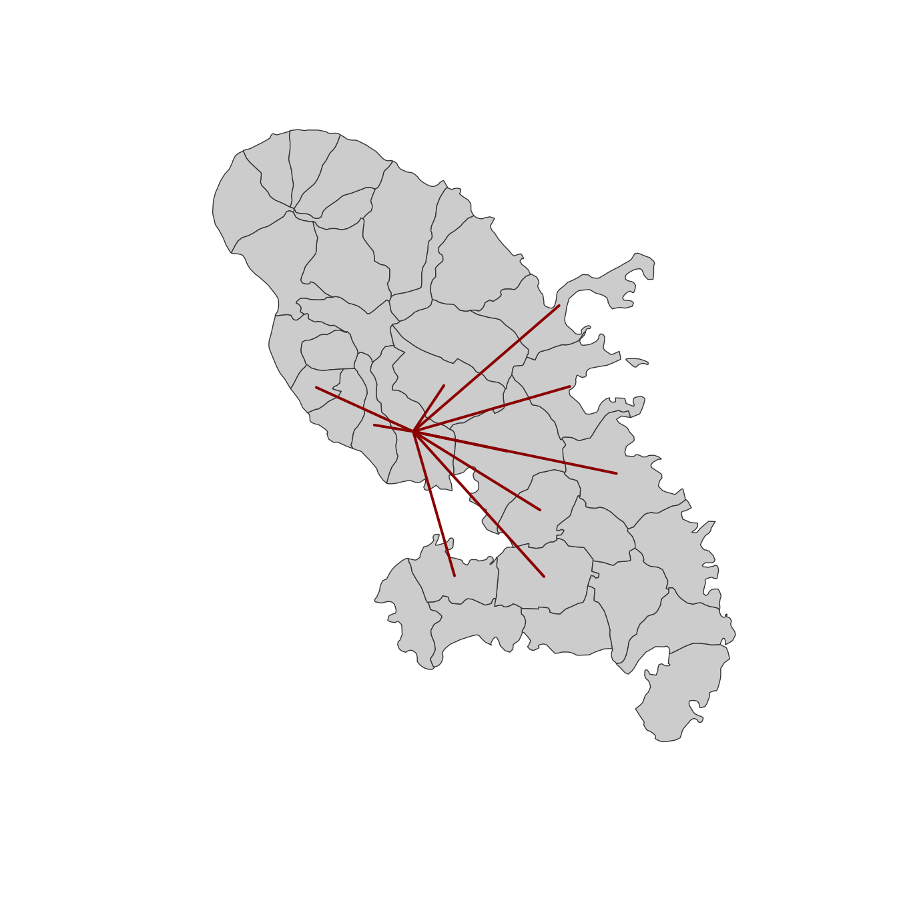

Create a link layer from a data.frame of links and an sf object.
Arguments
- x
an sf object, a simple feature collection.
- df
a data.frame that contains identifiers of starting and ending points.
- x_id
name of the identifier variable in x, default to the first column (optional)
- df_id
names of the identifier variables in df, character vector of length 2, default to the two first columns. (optional)
Examples
mtq <- mf_get_mtq()
mob <- read.csv(system.file("csv/mob.csv", package = "mapsf"))
# Select links from Fort-de-France (97209))
mob_97209 <- mob[mob$i == 97209, ]
# Create a link layer
mob_links <- mf_get_links(x = mtq, df = mob_97209)
# Plot the links
mf_map(mtq)
mf_map(mob_links, col = "red4", lwd = 2, add = TRUE)
